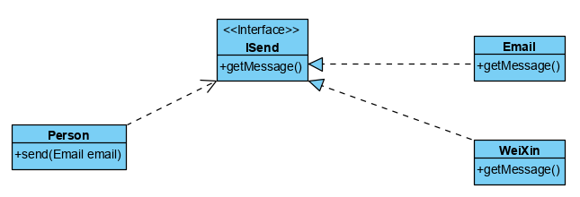
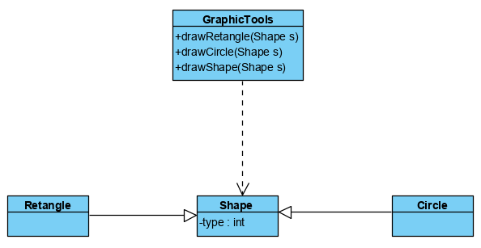
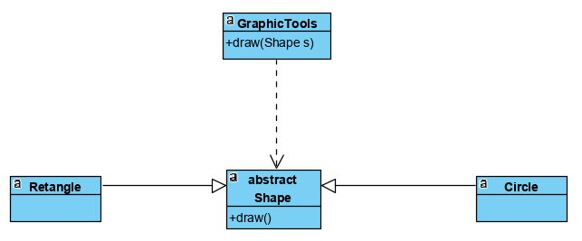
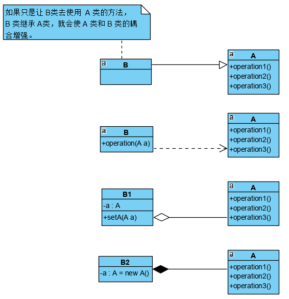

设计模式原则，其实就是程序员在编程时，应当遵守的原则，也是各种设计模式的基础。
常用七大原则
- 单一职责原则
- 接口隔离原则
- 依赖倒置原则
- 里式替换原则
- 开闭原则
- 迪米特法则
- 合成/聚合复用原则
单一职责原则
就一个类而言，一个类应该只负责一项职责。比如类 A 负责两个不同职责：职责 1 和 职责 2。当职责 1 需求变更而改变类 A 时，可能会造成职责 2 执行错误，所以需要将 A 的粒度分解成 A1，A2。
单一职责原则注意事项和细节
- 降低类的复杂度，一个类只负责一项职责
- 提高类的可读性，可维护性
- 降低变更引起的风险
- 通常情况下，我们应当遵守单一职责原则。只有逻辑足够简单，才可以在代码级违反单一职责原则；只有类中方法数量足够少，可以在方法级别保持单一职责原则。
接口隔离原则
一个类不应该依赖它不需要的接口，即一个类对另一个类的依赖应该建立在最小的接口上。
示例

1 | /** |
2 | * IOperation |
3 | */ |
4 | public interface IOperation { |
5 | |
6 | void operation1(); |
7 | void operation2(); |
8 | void operation3(); |
9 | void operation4(); |
10 | void operation5(); |
11 | } |
12 | |
13 | /** |
14 | * OperationA |
15 | */ |
16 | public class OperationA implements IOperation { |
17 | |
18 | |
19 | public void operation1() { |
20 | System.out.println("A 的 operation1 方法"); |
21 | } |
22 | |
23 | |
24 | public void operation2() { |
25 | System.out.println("A 的 operation2 方法"); |
26 | } |
27 | |
28 | |
29 | public void operation3() { |
30 | System.out.println("A 的 operation3 方法"); |
31 | } |
32 | |
33 | |
34 | public void operation4() { |
35 | System.out.println("A 的 operation4 方法"); |
36 | } |
37 | |
38 | |
39 | public void operation5() { |
40 | System.out.println("A 的 operation5 方法"); |
41 | } |
42 | } |
43 | |
44 | /** |
45 | * OperationB |
46 | */ |
47 | public class OperationB implements IOperation { |
48 | |
49 | |
50 | public void operation1() { |
51 | System.out.println("B 的 operation1 方法"); |
52 | } |
53 | |
54 | |
55 | public void operation2() { |
56 | System.out.println("B 的 operation2 方法"); |
57 | } |
58 | |
59 | |
60 | public void operation3() { |
61 | System.out.println("B 的 operation3 方法"); |
62 | } |
63 | |
64 | |
65 | public void operation4() { |
66 | System.out.println("B 的 operation4 方法"); |
67 | } |
68 | |
69 | |
70 | public void operation5() { |
71 | System.out.println("B 的 operation5 方法"); |
72 | } |
73 | } |
74 | |
75 | /** |
76 | * A |
77 | */ |
78 | public class A { |
79 | |
80 | public void operation1(IOperation operation) { |
81 | operation.operation1(); |
82 | } |
83 | |
84 | public void operation2(IOperation operation) { |
85 | operation.operation2(); |
86 | } |
87 | |
88 | public void operation3(IOperation operation) { |
89 | operation.operation3(); |
90 | } |
91 | } |
92 | |
93 | /** |
94 | * B |
95 | */ |
96 | public class B { |
97 | |
98 | public void operation1(IOperation operation) { |
99 | operation.operation1(); |
100 | } |
101 | |
102 | public void operation4(IOperation operation) { |
103 | operation.operation4(); |
104 | } |
105 | |
106 | public void operation5(IOperation operation) { |
107 | operation.operation5(); |
108 | } |
109 | } |
110 | |
111 | ``` |
112 | |
113 | 根据 UML 类图可知，类 A 通过接口 IOperation 依赖类 OperationA，类 B 通过接口 IOperation 依赖类 OperationB。如果接口 IOperation 对于类 A 和类 B 来说不是最小接口，那么类 OperationA 和类 OperationB 必须去实现它们不需要的方法。 |
114 | |
115 | **根据接口隔离原则改进** |
116 | |
117 | 将 IOperation 接口拆分成几个独立的接口，类 A 和类 B 分别与它们需要的接口建立依赖关系,也就是采用接口隔离原则。 |
118 | |
119 |  |
120 | |
121 | ```java |
122 | /** |
123 | * IOperation1 |
124 | */ |
125 | public interface IOperation1 { |
126 | |
127 | void operation1(); |
128 | } |
129 | |
130 | /** |
131 | * IOperation2 |
132 | */ |
133 | public interface IOperation2 { |
134 | |
135 | void operation2(); |
136 | void operation3(); |
137 | } |
138 | |
139 | /** |
140 | * IOperation3 |
141 | */ |
142 | public interface IOperation3 { |
143 | |
144 | void operation4(); |
145 | void operation5(); |
146 | } |
147 | |
148 | /** |
149 | * OperationA |
150 | */ |
151 | public class OperationA implements IOperation1, IOperation2 { |
152 | |
153 | |
154 | public void operation1() { |
155 | System.out.println("A 的 operation1 方法"); |
156 | } |
157 | |
158 | |
159 | public void operation2() { |
160 | System.out.println("A 的 operation2 方法"); |
161 | } |
162 | |
163 | |
164 | public void operation3() { |
165 | System.out.println("A 的 operation3 方法"); |
166 | } |
167 | |
168 | } |
169 | |
170 | /** |
171 | * OperationB |
172 | */ |
173 | public class OperationB implements IOperation1, IOperation3 { |
174 | |
175 | |
176 | public void operation1() { |
177 | System.out.println("B 的 operation1 方法"); |
178 | } |
179 | |
180 | |
181 | public void operation4() { |
182 | System.out.println("B 的 operation4 方法"); |
183 | } |
184 | |
185 | |
186 | public void operation5() { |
187 | System.out.println("B 的 operation5 方法"); |
188 | } |
189 | } |
190 | |
191 | /** |
192 | * A 通过接口 IOperation1，IOperation2 依赖 OperationA 类， |
193 | * 只实现了 operation1，operation2，operation3 方法 |
194 | */ |
195 | public class A { |
196 | |
197 | public void operation1(IOperation1 operation) { |
198 | operation.operation1(); |
199 | } |
200 | |
201 | public void operation2(IOperation2 operation) { |
202 | operation.operation2(); |
203 | } |
204 | |
205 | public void operation3(IOperation2 operation) { |
206 | operation.operation3(); |
207 | } |
208 | } |
209 | |
210 | /** |
211 | * B 通过接口 IOperation1，IOperation3 依赖 OperationB 类， |
212 | * 只实现了 operation1，operation4，operation5 方法 |
213 | */ |
214 | public class B { |
215 | |
216 | public void operation1(IOperation1 operation) { |
217 | operation.operation1(); |
218 | } |
219 | |
220 | public void operation4(IOperation3 operation) { |
221 | operation.operation4(); |
222 | } |
223 | |
224 | public void operation5(IOperation3 operation) { |
225 | operation.operation5(); |
226 | } |
227 | } |
依赖倒置原则
依赖倒置原则是指：
- 高层模块不应该依赖低层模块，两者都应该依赖其抽象。
- 抽象不应该依赖细节，细节应该依赖抽象。
- 依赖倒置的中心思想是面向接口编程。
- 依赖倒置原则是基于这样的设计理念：相对细节的多变性，抽象的东西要稳定的多，故以抽象为基础搭建的架构比以细节为基础搭建的架构要稳定的多。在 Java 中，抽象是指接口或者抽象类，细节就是具体的实现类。
- 使用接口或抽象类的目的是制定好规范，而不涉及具体的操作，把展现细节的任务交给它们的实现类进行完成。
示例
Person 类发送消息的功能。

1 | /** |
2 | * Person |
3 | */ |
4 | public class Person { |
5 | |
6 | public void send(Email email) { |
7 | System.out.println(email.getMessage()); |
8 | } |
9 | } |
10 | |
11 | /** |
12 | * Email |
13 | */ |
14 | public class Email { |
15 | |
16 | public String getMessage() { |
17 | return "message"; |
18 | } |
19 | } |
上述方案简单，比较容易想到。但是，如果我们发送的对象是微信，短信等等，则新增类，同时 Person 也要增加相应的发送方法，这样对类的改动就比较大。
根据依赖倒置原则改进
解决思路：引入一个抽象的接口 ISend 来表示发送者，这样 Person 类与接口 ISend 发生依赖，其次 Email，WeiXin 等属于发送的范畴，它们各自实现 ISend 接口,这样就符合依赖倒转原则。

1 | /** |
2 | * ISend |
3 | */ |
4 | public interface ISend { |
5 | |
6 | String getMessage(); |
7 | } |
8 | |
9 | /** |
10 | * Email |
11 | */ |
12 | public class Email implements ISend { |
13 | |
14 | |
15 | public String getMessage() { |
16 | return "Email message."; |
17 | } |
18 | } |
19 | |
20 | |
21 | public class WeiXin implements ISend { |
22 | |
23 | |
24 | public String getMessage() { |
25 | return "WeiXin message."; |
26 | } |
27 | } |
28 | |
29 | /** |
30 | * Person |
31 | */ |
32 | public class Person { |
33 | |
34 | public void send(ISend send) { |
35 | System.out.println(send.getMessage()); |
36 | } |
37 | } |
依赖倒置的注意事项和细节
- 低层模块尽量都要有接口或抽象类，或者两者都有，这样程序的稳定性更好。
- 变量的声明尽量是接口或抽象类，这样变量的引用和实际对象间，就存在一个缓冲层，便于程序的扩展和优化。
- 继承时遵循里式替换原则。
依赖关系传递的三种方式
接口传递
构造方法传递
setter 方法传递
里式替换原则
里式替换原则是指，如果对每个类型为 T1 的对象 o1，都有类型为 T2 的对象 o2，使得以 T1 定义的所有程序 P 在所有的对象 o1 都代换成 o2 时，程序 P 的行为没有发生变化，那么类型 T2 是类型 T1 的子类型。换句话说，所有引用基类的地方必须能透明地使用其子类的对象。
在使用继承时，遵循里氏替换原则，在子类中尽量不要重写父类的方法。
里氏替换原则告诉我们，继承实际上让两个类耦合性增强了，在适当的情况下，可以通过聚合，组合，依赖来解决问题。
面向对象编程中继承性的思考和说明
- 继承包含这样一层含义：父类中凡是已经实现的方法，实际上是在设定规范，虽然它不强制要求所有继承它的子类必须遵循这些规范，但是如果子类对这些已经实现的方法任意修改，就会对整个继承体系造成破坏。
- 继承在给程序带来便利的同时，也带来了弊端。使用继承会给程序带来侵入性，程序的可移植性降低，增加了程序间的耦合性；如果一个类被其他类所继承，在修改这个类时，必须考虑到它所有的子类，并且父类修改后，所涉及到子类的功能可能会故障。
- 编程中在使用继承时，遵循里式替换原则。
示例
1 | /** |
2 | * Main |
3 | */ |
4 | public class Main { |
5 | |
6 | public static void main(String[] args) { |
7 | A a = new A(); |
8 | System.out.println(a.function1(20, 9)); // 11 |
9 | |
10 | B b = new B(); |
11 | System.out.println(b.function1(20, 9));// 本意是求 20 - 9，结果是 20 + 9 |
12 | System.out.println(b.function2(20, 9)); // 20 + 9 + 9 |
13 | } |
14 | } |
15 | |
16 | /** |
17 | * A |
18 | */ |
19 | public class A { |
20 | |
21 | /** |
22 | * 返回两数之差 |
23 | */ |
24 | public int function1(int a, int b) { |
25 | return a - b; |
26 | } |
27 | } |
28 | |
29 | /** |
30 | * B 继承 A |
31 | */ |
32 | public class B extends A { |
33 | |
34 | /** |
35 | * 重写了父类的方法，可能是无意识的重写 |
36 | */ |
37 | public int function1(int a, int b) { |
38 | return a + b; |
39 | } |
40 | |
41 | public int function2(int a, int b) { |
42 | return this.function1(a, b) + 9; |
43 | } |
44 | } |
我们发现原来运行正常的相减功能发生了错误。原因就是类 B 无意中重写了父类的方法，造成原有功能出现错误。在实际编程中，我们常常会通过重写父类的方法完成新的功能，这样写起来虽然简单，但整个继承体系的复用性会比较差，特别是运行多态比较频繁的时候。
根据里氏替换原则改进
将原来的父类和子类都继承一个更通俗的基类，原有的继承关系去掉，采用依赖，聚合，组合等关系代替。

1 | /** |
2 | * Base |
3 | */ |
4 | public class Base { |
5 | /** |
6 | * 将基础的方法和成员写到基类中 |
7 | */ |
8 | } |
9 | |
10 | /** |
11 | * A |
12 | */ |
13 | public class A extends Base { |
14 | |
15 | /** |
16 | * 返回两数之差 |
17 | */ |
18 | public int function1(int a, int b) { |
19 | return a - b; |
20 | } |
21 | } |
22 | |
23 | /** |
24 | * B |
25 | */ |
26 | public class B extends Base { |
27 | |
28 | private A a = new A(); |
29 | |
30 | /** |
31 | * 重写了父类的方法，可能是无意识的重写 |
32 | */ |
33 | public int function1(int a, int b) { |
34 | return a + b; |
35 | } |
36 | |
37 | public int function2(int a, int b) { |
38 | return this.function1(a, b) + 9; |
39 | } |
40 | |
41 | /** |
42 | * 仍然使用 A 类的方法 |
43 | */ |
44 | public int function3(int a, int b) { |
45 | return this.a.function1(a, b); |
46 | } |
47 | } |
48 | |
49 | /** |
50 | * Main |
51 | */ |
52 | public class Main { |
53 | |
54 | public static void main(String[] args) { |
55 | A a = new A(); |
56 | System.out.println(a.function1(20, 9)); // 11 |
57 | |
58 | B b = new B(); |
59 | System.out.println(b.function3(20, 9));// 使用组合仍然可以使用到A类相关方法 |
60 | System.out.println(b.function2(20, 9)); // 20 + 9 + 9 |
61 | } |
62 | } |
开放封闭原则
开闭原则(Open Closed Principle)是编程中最基础、最重要的设计原则。一个程序实体，如类，模块和函数应该对扩展开放(对提供方)，对修改关闭(对使用方)。用抽象构建框架，用实现扩展细节。当程序需要变化时，尽量通过扩展程序实体的行为来实现变化，而不是通过修改已有的代码来实现变化。编程中遵循其它原则，以及使用设计模式的目的就是遵循开放封闭原则。
示例

1 | /** |
2 | * GraphicTools |
3 | */ |
4 | public class GraphicTools { |
5 | |
6 | public void drawShape(Shape s) { |
7 | |
8 | if (s.getType() == 1) { |
9 | drawRetangle(s); |
10 | } else if (s.getType() == 2) { |
11 | drawCirCle(s); |
12 | } |
13 | } |
14 | |
15 | public void drawRetangle(Shape s) { |
16 | System.out.println("绘制长方形"); |
17 | } |
18 | |
19 | public void drawCirCle(Shape s) { |
20 | System.out.println("绘制圆形"); |
21 | } |
22 | } |
23 | |
24 | /** |
25 | * Shape |
26 | */ |
27 | public class Shape { |
28 | |
29 | protected int type; |
30 | |
31 | public int getType() { |
32 | return type; |
33 | } |
34 | |
35 | public void setType(int type) { |
36 | this.type = type; |
37 | } |
38 | } |
39 | |
40 | /** |
41 | * Retangle |
42 | */ |
43 | public class Retangle extends Shape { |
44 | |
45 | public Retangle() { |
46 | this.type = 1; |
47 | } |
48 | } |
49 | |
50 | /** |
51 | * Circle |
52 | */ |
53 | public class Circle extends Shape { |
54 | |
55 | public Circle() { |
56 | this.type = 2; |
57 | } |
58 | } |
59 | |
60 | /** |
61 | * Main |
62 | */ |
63 | public class Main { |
64 | |
65 | public static void main(String[] args) { |
66 | GraphicTools graphicTools = new GraphicTools(); |
67 | graphicTools.drawShape(new Retangle()); |
68 | graphicTools.drawShape(new Circle()); |
69 | } |
70 | } |
如果此时需要增加一个绘制椭圆的功能，我们需要在 GraphicTools 类中增加此方法，做一些修改，便违反了开放封闭原则，即当我们给类增加新功能的时候，尽量不修改代码，或尽可能少的修改代码。
根据开放封闭原则改进
将Shape类做成抽象类，并提供一个抽象的 draw 方法，让子类去实现即可，这样我们有新的图形种类时，只需要让新的图形类继承 Shape,并实现 draw 方法即可，使用方的代码就不需要修改了。

1 | /** |
2 | * GraphicTools |
3 | */ |
4 | public class GraphicTools { |
5 | |
6 | public void drawShape(Shape s) { |
7 | s.draw(); |
8 | } |
9 | } |
10 | |
11 | /** |
12 | * Shape |
13 | */ |
14 | public abstract class Shape { |
15 | |
16 | protected abstract void draw(); |
17 | } |
18 | |
19 | /** |
20 | * Retangle |
21 | */ |
22 | public class Retangle extends Shape { |
23 | |
24 | |
25 | protected void draw() { |
26 | System.out.println("绘制长方形"); |
27 | } |
28 | } |
29 | |
30 | /** |
31 | * Circle |
32 | */ |
33 | public class Circle extends Shape { |
34 | |
35 | |
36 | protected void draw() { |
37 | System.out.println("绘制圆形"); |
38 | } |
39 | } |
40 | |
41 | /** |
42 | * Main |
43 | */ |
44 | public class Main { |
45 | |
46 | public static void main(String[] args) { |
47 | GraphicTools graphicTools = new GraphicTools(); |
48 | graphicTools.drawShape(new Retangle()); |
49 | graphicTools.drawShape(new Circle()); |
50 | } |
51 | } |
迪米特法则
- 一个对象应该对其他对象保持最少的了解。
- 类与类关系越密切，耦合度越大。
- 迪米特法则(Demeter Principle)又叫最少知道原则，即一个类对自己依赖的类知道的越少越好。也就是说，对于被依赖的类不管多么复杂，都尽量将逻辑封装在类的内部。对外除了提供的 public 方法，不对外泄露任何信息。
- 迪米特法则还有个更简单的定义：只与直接的朋友通信。
- 直接的朋友：每个对象都会与其他对象有耦合关系，只要两个对象之间有耦合关系，我们就说这两个对象之间是朋友关系。耦合的方式很多，依赖，关联，组合，聚合等。其中，我们称出现成员变量，方法参数，方法返回值中的类为直接的朋友，而出现在局部变量中的类不是直接的朋友。也就是说，陌生的类最好不要以局部变量的形式出现在类的内部。
迪米特法则注意事项与细节
- 迪米特法则的核心是降低类之间的耦合。
- 但是注意:由于每个类都减少了不必要的依赖，因此迪米特法则只是要求降低类间(对象间)耦合关系， 并不是要求完全没有依赖关系。
合成/聚合复用原则
合成复用原则是指，类之间的依赖尽量使用合成/聚合的方式，而不是使用继承。
示例

合成和聚合都是关联的特殊种类。聚合表示一种弱的拥有关系，体现的是 A 对象可以包含 B 对象，但 B 对象不是 A 对象的一部分；合成则是一种强的拥有关系，体现了严格的部分和整体的关系，部分和整体的生命周期一样。
合成/聚合复用原则的好处是，优先使用对象的合成/聚合将有助于保持每个类被封装，并被集中在单个任务上。这样类和类的继承层次会保持较小规模，并且不太可能增长为不可控制的庞然大物。